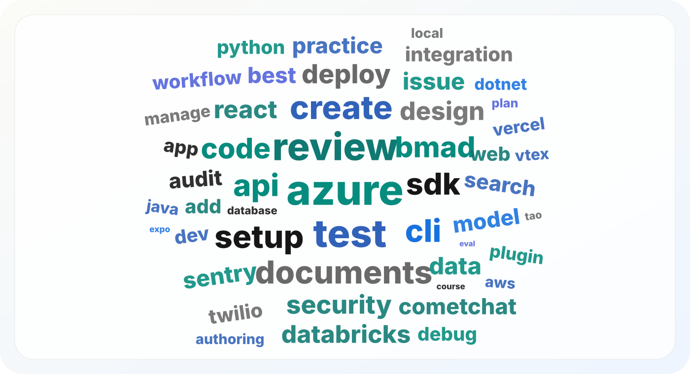

Data
Official AI agent skills statistics
A market report on official AI agent skills: which companies publish them, what their skills teach agents to do, and which software segments already have real coverage.

What skills are
AI agent skills are reusable instruction packages that teach an agent how to complete a specific type of work. A skill can include a trigger, step-by-step workflow, examples, references, scripts, tool rules, and safety checks.
In practice, a skill turns product knowledge into agent-ready procedure. It can teach an agent how to call an API, configure auth, review a pull request, deploy an app, create a dashboard, run a security check, or follow a company workflow.
The open Agent Skills format was originally developed by
Anthropic
and published as an open standard. The
Agent Skills overview
defines the basic shape: a folder with a required SKILL.md file and optional scripts,
references, assets, or other resources. The
specification
keeps the format small enough for companies and agent tools to adopt, with development
continuing in the
open GitHub repo.
Official skills are a new SaaS surface
Official skills are published by the company, project, or product team that owns the underlying software. They are becoming a new SaaS surface because they let companies ship product knowledge directly to AI agents.
A SaaS company already has docs, SDKs, dashboards, APIs, support articles, and templates. An official skill packages the practical path through those materials: which API to use, which setup steps matter, which defaults are safe, and which checks should happen before production use.
This changes how software can be adopted. A user can ask an agent to add analytics, payments, observability, authentication, or deployment support, and the agent can follow vendor-owned instructions instead of guessing from scattered examples.
What companies usually turn into skills
The most common official skills teach agents how to work inside software systems with less guesswork. API and SDK usage is a major pattern. Companies also publish skills for code review, deployment, analytics, observability, setup, security, research, documents, and product workflows.
The table below groups public skill names and descriptions into recurring themes. A skill can appear in more than one theme, because product work often overlaps. For example, a Supabase RLS skill is both infrastructure and security, while a Stripe Checkout skill is both API work and payments.
| Skill theme | Skills matched | Share of skills | What agents learn |
|---|---|---|---|
| Code generation and code review | 3,081 | 21.6% | Review pull requests, refactor code, create components, write tests, improve frontend and backend implementation. |
| API and SDK usage | 1,786 | 12.5% | Call APIs, use SDKs, set up webhooks, work with MCP servers, follow endpoint-specific rules. |
| Cloud, deployment, and infrastructure | 1,738 | 12.2% | Deploy apps, configure cloud resources, manage databases, handle storage, run migrations, validate infrastructure. |
| Analytics, data, and reporting | 1,687 | 11.8% | Instrument events, build dashboards, query product data, manage feature flags, create reports. |
| Research, search, and crawling | 1,333 | 9.3% | Search the web, scrape pages, crawl sites, map URLs, extract structured content, support research workflows. |
| Testing, debugging, and observability | 1,303 | 9.1% | Debug errors, inspect logs, validate changes, add telemetry, run browser tests, monitor production behavior. |
| Team workflow and product operations | 1,228 | 8.6% | Manage issues, write PRDs, handle releases, triage workflow states, support project planning. |
| Setup and installation | 959 | 6.7% | Initialize products, configure tools, onboard projects, scaffold starter files, choose safe defaults. |
| Design, content, and documents | 800 | 5.6% | Work with Figma or Canva, create presentations, edit documents, generate video assets, apply brand feedback. |
| Security, auth, and compliance | 779 | 5.5% | Set up auth, inspect permissions, review secrets, audit policies, handle compliance-oriented checks. |
| Payments, commerce, and finance | 395 | 2.8% | Build checkout flows, manage billing, work with commerce APIs, use wallets, fetch market data. |
Code and API work lead because official skills are closest to developer tools today. The next large group is operational: deployment, data, debugging, analytics, and setup. Companies use skills to package repeatable product work with instructions, examples, checks, and product-specific procedures.
Which segments are covered
Official skills are strongest in developer infrastructure, AI tooling, cloud deployment, data access, analytics, and product engineering. Business-team coverage is emerging through design, content, productivity, payments, commerce, and customer-facing tools.
| Segment | Representative companies | What the skills teach agents to do |
|---|---|---|
| Cloud and infrastructure | Microsoft, Vercel, Firebase, Supabase, Cloudflare, AWS, Google | Deploy apps, configure cloud services, inspect infrastructure, handle storage, set up auth, validate production readiness. |
| AI model providers and agent platforms | Anthropic, OpenAI, Google Gemini, Nous Research, NVIDIA, Hugging Face | Use agent frameworks, build skills, work with model APIs, run evaluations, manage files, build MCP servers, use local notebooks. |
| Developer tools and code quality | GitHub, Sentry, CodeRabbit, JetBrains, Expo, Flutter, shadcn/ui | Review code, write commits, generate tests, debug errors, refactor, document systems, improve UI implementation. |
| Analytics and observability | PostHog, Metabase, Mixpanel, Dash0, Databricks, Adobe | Instrument events, create dashboards, manage feature flags, query data, check semantic models, add telemetry. |
| Search, crawling, and research | Firecrawl, Browser Use, Apify-style tooling, AI research repos | Search the web, scrape pages, crawl sites, map URLs, interact with browsers, build research workflows. |
| Payments, commerce, and finance | Stripe, Shopify, Coinbase, 1inch, CoinMarketCap, Bitrefill-style providers | Build checkout flows, manage billing, use commerce APIs, fetch market data, work with wallets, call paid endpoints. |
| Design, content, and productivity | Figma, Canva, Notion, Slack, Google Workspace, Remotion | Create design artifacts, translate brand feedback, build presentations, write documents, manage team workflows, generate video assets. |
What the leading companies offer
Companies publish official skill repos or skill libraries so builders can install vendor-owned instructions for agents.
Microsoft has the broadest company-owned surface, with many skills for Azure and business platform operations. Anthropic publishes skills around Claude workflows, document formats, frontend implementation, legal and finance workflows, and MCP. OpenAI publishes skills connected to Codex, repo work, security review, browser testing, Figma, Linear, and app-building workflows.
GitHub is strong in software delivery workflows through Copilot skills. Vercel connects skills to deployment, web design, the AI SDK, and agent browser work. Firecrawl gives agents a complete search and extraction toolkit. Supabase, Firebase, Cloudflare, and Stripe show the next layer: official skills for infrastructure, auth, storage, observability, and payments.
Smaller company skill libraries can still be useful. Metabase has 11 skills focused on embedded analytics and semantic checks. Mixpanel has 26 skills for dashboards, tracking, experiments, feature flags, and lexicon management. Canva has a compact set of design workflow skills for bulk creation, resizing, brand checks, feedback, and presentations.
What this says about the market
Official skills are moving fastest where a product has developer adoption, public docs, APIs, SDKs, CLIs, or dashboards. These products already need precise workflows, and agents benefit from vendor-owned instructions.
The current official-skills market is centered on developers, engineers, and the agents they use for software work. The strongest categories are code review, API and SDK usage, deployment, analytics instrumentation, debugging, observability, and infrastructure setup.
Skills for everyday business users are at an earlier stage. Design, content, productivity, payments, commerce, and customer support have less depth than engineering workflows. The likely next wave is skill libraries that help operators, marketers, analysts, founders, and support teams use complex SaaS tools through agents.
Official skills also change product distribution. A company can publish an official skill so agents learn the preferred API path, common setup steps, safe defaults, and troubleshooting flow. That makes official skills part of documentation, support, onboarding, and developer relations.
How builders should use this data
Builders should start with official skills when the task involves a vendor product: authentication, payments, cloud setup, analytics, observability, design, or API work. Vendor-owned skills usually encode current product assumptions better than random examples.
The useful workflow is simple: search the
Skillscout official skills directory,
open the source, read the SKILL.md, check scripts and permissions, then
install the skill into the agent environment you use.
What this report counts
An owner is a company, organization, lab account, or project that publishes official skills. A repo is a public source repository that contains one or more skills. A skill is a reusable agent instruction package centered around a product, workflow, API, tool, or domain task.
Skill count measures how much surface area a company exposes to agents. GitHub stars measure repository visibility. Install counts measure demand on directories and marketplaces that report installs. The rankings are separated because each signal answers a different question.
Some brands publish skills from more than one organization or lab account. Vercel is the clearest example: Vercel and Vercel Labs together account for 351 skills, 66 repos, 5.4 million installs, and 482,665 stars in this analysis.
Data caveats
Install counts come from directories and marketplaces that expose them. GitHub stars come from repositories, so a large repo can lift a company even when the skill set is small. Some source directories split brands across lab accounts, product accounts, and main organizations. Future editions can separate strict verified-company rankings from broader official directory rankings.
The market direction is clear: official AI agent skills are concentrated around developer tools and infrastructure today, with analytics, design, productivity, payments, and commerce expanding behind them.
Statistics
The statistics below come from the Skillscout official skills directory, which tracks official skills across SKILLS.sh, officialskills.sh, mcpservers.org, Cursor Marketplace, and GitHub. The current totals are:
Official owners publishing the most skills
Microsoft has the largest official-skill footprint, followed by Anthropic and OpenAI. The top rows show two patterns: broad platform companies publish many small skills across products, while AI-native companies publish workflow libraries for agent building, coding, files, research, and MCP.
| Company | Skills | Repos | Installs | Stars | Main coverage |
|---|---|---|---|---|---|
| Microsoft | 1,521 | 54 | 11,198,145 | 708,677 | Azure, Foundry, Fabric, Power Platform, VS Code, beginner agent education |
| Anthropic | 750 | 18 | 3,296,425 | 652,759 | Claude skills, frontend design, files, MCP building, legal, finance, knowledge work |
| OpenAI | 713 | 8 | 139,591 | 290,363 | Codex, plugins, security review, GitHub workflow, browser testing, Figma, Linear |
| PostHog | 598 | 7 | 33,793 | 38,543 | Product analytics, feature flags, subscriptions, instrumentation, agent modes |
| GitHub | 459 | 8 | 2,213,917 | 168,059 | Copilot workflows, commits, PRDs, refactors, Docker, Java, Playwright tests |
| Sentry | 334 | 22 | 150,455 | 66,134 | Developer operations, error tracking, debugging, code health, product workflows |
| Firecrawl | 327 | 14 | 1,393,555 | 3,740 | Search, scrape, crawl, map, download, browser interaction, research flows |
| NVIDIA | 300 | 1 | 345,129 | 2,606 | AI infrastructure, CUDA, RAG, DeepStream, cuOpt, accelerated computing |
| CodeRabbit | 295 | 3 | 13,246 | 188 | Code review, pull request automation, repository analysis, engineering workflows |
| x-cmd | 267 | 1 | 664 | 24 | Command-line workflows, shell utilities, developer automation |
Official owners with the strongest install signals
Install counts highlight demand on discovery and marketplace surfaces. Microsoft leads because its Azure skills have very high install counts. Vercel Labs, Anthropic, GitHub, Firecrawl, Firebase, Remotion, Expo, and Supabase also show strong marketplace demand.
| Company | Installs | Skills | Notable signal |
|---|---|---|---|
| Microsoft | 11,198,145 | 1,521 | Azure skills dominate the highest-install rows. |
| Vercel Labs | 5,165,053 | 230 | find-skills, agent-browser, and web-design skills carry major demand. |
| Anthropic | 3,296,425 | 750 | Frontend, skill creation, documents, spreadsheets, PDFs, and MCP skills are heavily used. |
| Jesse Vincent | 2,359,400 | 14 | High install demand from widely used agent and productivity workflows. |
| GitHub | 2,213,917 | 459 | awesome-copilot is the main distribution engine. |
| Firecrawl | 1,393,555 | 327 | Search, scrape, crawl, map, and browser-interaction skills form a clear stack. |
| Firebase | 1,307,808 | 33 | Firebase basics, auth, hosting, security rules, Firestore, and Crashlytics have strong installs. |
| Remotion | 539,837 | 76 | Video and rendering workflows have strong marketplace usage. |
| Expo | 512,963 | 26 | Mobile app development workflows show high install demand. |
| Supabase | 480,864 | 19 | Postgres best practices and the core Supabase skill drive most installs. |
Official owners with the strongest GitHub visibility
GitHub stars favor companies with popular open-source repos. Stars are useful for ecosystem visibility and weaker as a direct skill-usage metric. The leading rows show where skills are attached to widely watched developer ecosystems.
| Company | Stars | Skills | Interpretation |
|---|---|---|---|
| Microsoft | 708,677 | 1,521 | Broad open-source and cloud footprint. |
| Anthropic | 652,759 | 750 | Claude Code, skills, plugins, legal, finance, and knowledge-work repos. |
| OpenAI | 290,363 | 713 | Codex and agent SDK repos create strong developer visibility. |
| Meta | 281,144 | 23 | High stars from large open-source projects with a smaller skill surface. |
| Vercel | 271,336 | 121 | Next.js, AI SDK, and Vercel workflows give the company a major developer footprint. |
| Hugging Face | 261,621 | 43 | Model and ML tooling visibility supports a smaller skill catalog. |
| Jesse Vincent | 257,522 | 14 | A small skill set attached to widely watched open-source work. |
| Vercel Labs | 211,329 | 230 | Agent browser, skill discovery, and web-design workflows have strong developer visibility. |